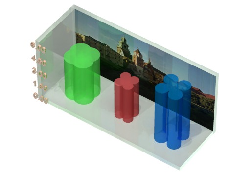
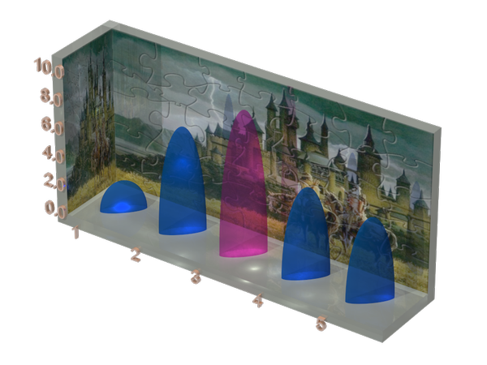
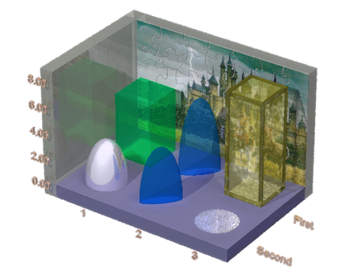

TABLE OF CONTENTS
ScPovPlot3D/Histogram.inc [ Modules ]
PURPOSE
Old, well known templates, no improvements yet, sorry. But in the next edition I plan to add some analytics, ie data to be read from raw file



Fig.[Histogram] Examples of histogram charts
*********************************************************
** Tested on PovRay 3.7 **
** License: GNU GPL **
** Homepage: http://scpovplot3d.sourceforge.net **
*********************************************************
** version: 3.0.7 (& have a nice time ;) **
*********************************************************
AUTHOR
Janusz Opi쓰 Ph.D.
jmo@agh.edu.pl, janusz.opila@gmail.com Dept. of Applied Informatics AGH University of Science & Technology, Cracow, Poland Maintained by Janusz Opi쓰 Ph.D.
HISTORY
2017-02-02, 3.1.0.7 - X-axis description impvnts
COPYRIGHT
GNU GPL v.3 License (c) 2012-now by Janusz Opi쓰 Ph.D. AGH University of Science and Technology
Histogram.inc/ReSet_dX_dY [ Helper macros ]
[ Top ] [ Histogram.inc ] [ Helper macros ]
PURPOSE
sets distance between bars along X and Z! axes
SYNOPSIS
#macro ReSet_dX_dY(_dx, _dy)
INPUTS
_dx, _dy - float, float - distance in POVRay units
SEE ALSO
empty
Histogram.inc/Set_ShiftXY, ShiftXY [ Helper macros ]
[ Top ] [ Histogram.inc ] [ Helper macros ]
PURPOSE
moves description labels of vertical axe along X-axis by that amount, can change it later on..
SYNOPSIS
#macro Set_ShiftXY(shft)
INPUTS
shft - float - distance in POVRay units along X_P axis
SEE ALSO
empty
Histogram.inc/Set_ShiftZ, _dzShift [ Helper macros ]
[ Top ] [ Histogram.inc ] [ Helper macros ]
PURPOSE
moves description labels (horizontal only) by that amount along z-axis, can change it later on..
SYNOPSIS
#macro Set_ShiftZ(shft)
INPUTS
shft - float - distance in POVRay units along Z_P axis
SEE ALSO
empty
Histogram.inc/Set_TextFont, _TextFont [ Helper macros ]
[ Top ] [ Histogram.inc ] [ Helper macros ]
PURPOSE
Defines font for textual elements of the chart
WARNING: Font must exist in the host operating system
default setting "Arial.ttf" should be safe on Windows, as well as on some GNU/Linux distros
SYNOPSIS
#declare _TextFont = "Arial.ttf"; #macro Set_TextFont (_TxtFnt)
INPUTS
_TxtFnt - string containing name of the file containing given font, ex. "Arial.ttf". Sets internal local variable _TextFont
SEE ALSO
Set_TFont ()